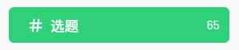
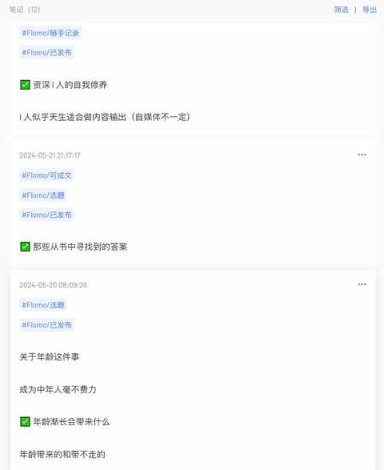
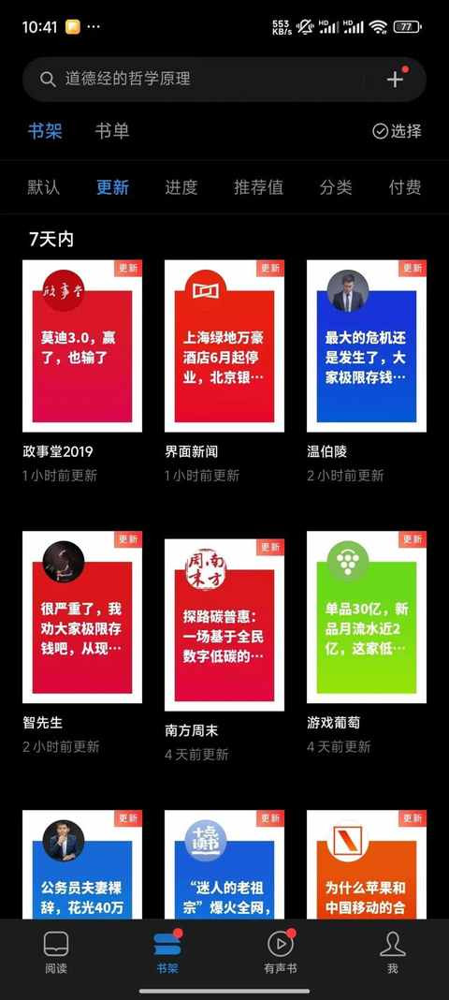
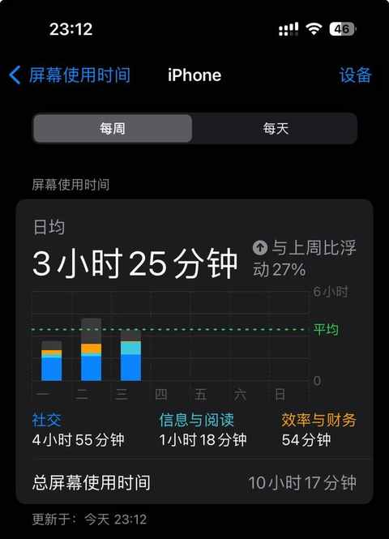

尝试输出的第21天，一个普通中年决定要重拾表达欲
本来今天是想着就不写了。
其一，是昨天电脑出了点问题，今天没弄好，反而情况更糟糕了，已经完全不能用，需重装系统才行
其二，晚上计划去打篮球， 怕回来后时间不够
其三，遇到瓶颈，有不少选题目前都很难组织流畅的语言
虽然想着不写，但是行动上和昨天没啥差别，丢完垃圾之后，依然打开浏览器登录了公众号后台，看了看之前发布的记录，掐指一算，今天是第21天，养成一个习惯的时间也是21天！
就这极其简单的就把自己说服，也是因为各种条件突然都具备了：
1. 有备用电脑且运行流畅
2. 去打篮球了，不过回来还挺早，时间充足
3. 这不都第 21 天了，值得去写写
虽然才短短20天，但持续输出所带来的变化已经能感受到，也会有一些顺带着养成的其他习惯和意外收获。
一、有想法随时记录
开始尝试输出之后，随时想到的选题都会记录到flomo中，加上 #选题 作为标签，方便在想写的时候去做检索。

已经发布的也可以再加上 #已发布 作为标签

再次推荐flomo 浮墨笔记，大家如果想试试轻量级的笔记app，别错过flomo。
二、坚持每日阅读文章
在微信读书app订阅一些大号，看到感兴趣的标题会点进去看。

查看订阅号消息中，看一看的内容，感受公众号的推荐算法
三、输出能带动思考
日常生活和工作中， 大家肯定都能预留出来吃饭的时间，运动休闲的时间，玩手机的时间，独处的时间等等。
也是开始尝试每天输出，在公众号发布一篇文章之后，才猛然察觉到一件细思极恐的事实：我并没有每天甚至每周给自己预留一个思考的时间，也没有一段时间持续去思考某一个问题。
恰恰输出能带动思考，能带动思考齿轮的转动。
四、一个 普通 中年，决定要重拾表达欲
为什么会有这个想法？
除了最近尝试做输出的原因之外，还得追溯到 3 年前听的一期播客节目，嘉宾和主播在对谈的过程中提到有表达欲望的普通人这一概念，当时被这句话击中，也把这期播客推荐给了不少朋友。
前段时间也有回听，虽说没有第一次听的时候那么被触动到，但结合我现在实践的内容，反而会更坚定的想要坚持输出，坚定的去表达。
普通人也可以自信地去表达。
现代人的表达欲似乎是越来越少，从大家发朋友圈的频次就能感受到，刷的多了之后会发现，经常发朋友圈的老是那些人，沉默的大多数的队伍似乎在不断壮大。
而在各种社交媒体上，普通人的发声更是越来越少，在表达越来越方便的当下，大家却越来越不想表达，可明明是大家人均使用手机的时间越来越长。

普通人更需要去表达，更要勇于去表达，刚开始必然会出现表达不好的情况，但随着数量的增多，习惯的养成，会有波折，但肯定会越来越好。